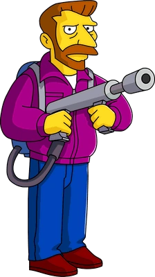

The Face of Villiany!
In my role as a Forensic Psychometrist, I have been tasked with assessing the facets of the human psyche that relate to psychopathy, recidivism, risk, malingering and personality. While all living humans possess some element of dangerousness, there are few, if any, that possess the callous disregard for human life that the infamous Hank Scorpio demonstrates. When combined with his propensity for violence, the venerable Mr. Scorpio is classified as the most Heinous man alive by the top military brass around the world. Well, really just in Canada. This page states just the facts about Hank Scorpio. As such, the content is upsetting and graphic in nature. Proceed only with a great measure of caution. I have read and assessed the most risky and violent offenders not just from Canada but from all over the world. This includes narcissistic, anti-social, and psychopathic individuals, however none of the people come even close to the monstrous nature of Hank Scorpio. The CEO and owner of Globex Corporation, Hank is the dashing and debonair face of pure evil!
While Mr. Scorpio, with his rugged good looks and chiseled jawbone, may not initially seem like the most dangerous man alive, his attractive exteriors hides the dastardliest of evils. What, you may ask, is this risk?
